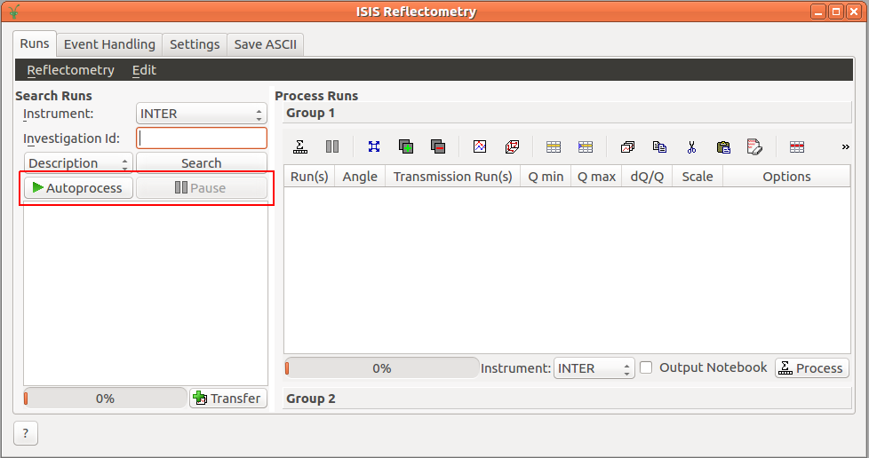

\(\renewcommand\AA{\unicode{x212B}}\)
Reflectometry Changes¶
ISIS Reflectometry Interface¶
{kind=link}
New¶
Fully-automatic processing has been added to the interface. Click
Autoprocessto process all of the runs for an investigation and to start polling for new runs. Whenever new runs are found, they will automatically be added to the table and processed.Live data monitoring has been added to the interface. This will periodically load live data from the instrument and reduce it with
ReflectometryReductionOneAutousing live values forThetaand the slit gaps. Other algorithm properties are taken fromGroup 1of the Settings tab. Note that changes to the Settings tab will not be updated in the monitor algorithm unless you stop and re-start monitoring.A new option has been added to the Settings tab to control whether partial bins should be included when summing in Q.
ReflectometryReductionOneAutotakes the polarization correction properties from the instrument parameter file whenPolarizationAnalysisis set toParameterFile. The instrument parameter file can store the efficiencies as vectors of doubles.
Features Removed¶
Added a deprecation notice to the ISIS Reflectometry (Old) interface, this is due to be removed in March 2019. It will be present in releases up until that date, but new features will only be added to the new interface.
Algorithms¶
Removed version 1 of
ReflectometryReductionOneandReflectometryReductionOneAuto.Renamed algorithms
PolarizationCorrectiontoPolarizationCorrectionFredrikzeandPolarizationEfficiencyCortoPolarizationCorrectionWildes.
New¶
Added algorithm
PolarizationEfficiencyCorwhich callsPolarizationCorrectionFredrikzeorPolarizationCorrectionWildesdepending on chosenMethodproperty.Added algorithms that help create a matrix workspace with polarization efficiencies ready to be used with
PolarizationEfficiencyCorCreatePolarizationEfficienciescreates efficiencies from polynomial coefficientsJoinISISPolarizationEfficienciesjoins individual efficiencies into one matrix workspaceLoadISISPolarizationEfficienciesloads efficiencies form files
The ILL reflectometry loader LoadILLReflectometry v1 implements the NeXus file changes of January 2018 and can load again all valid Nexus files for D17 and FIGARO which are available since 2013 and 2017, respectively.
Algorithms for reflectometry reduction at ILL have been added. These handle the basic polarized/unpolarized reduction in SumInLambda or SumInQ modes. Included algorithms:
A new algorithm ReflectometryMomentumTransfer v1 provides conversion to momentum transfer and \(Q_{z}\) resolution calculation for reflectivity workspaces.
A new algorithm ReflectometrySumInQ is available for coherent summation of the reflected beam.
ReflectometryReductionOne v2 and ReflectometryReductionOneAuto v3 no longer include partial bins by default when summing in Q. A new property, IncludePartialBins, has been added to re-enable partial bins.
Added a boolean property
Debugto the reflectometry algorithms that controls output of additional and/or intermediate workspaces.
Bug fixes¶
Correct the angle to the value of
ThetaInproperty if summing in lambda inReflectometryReductionOne-v2.Fixed an incorrectly calculated detector angle when loading FIGARO files using LoadILLReflectometry v1.
Liquids Reflectometer¶
New REF_L instrument geometry for 2018 run cycle.
Magnetism Reflectometer¶
Added live data information to Facilities.xml
Allow for the use of workspace groups as input to the reduction.
Added algorithm to compute scattering angle from a workspace.